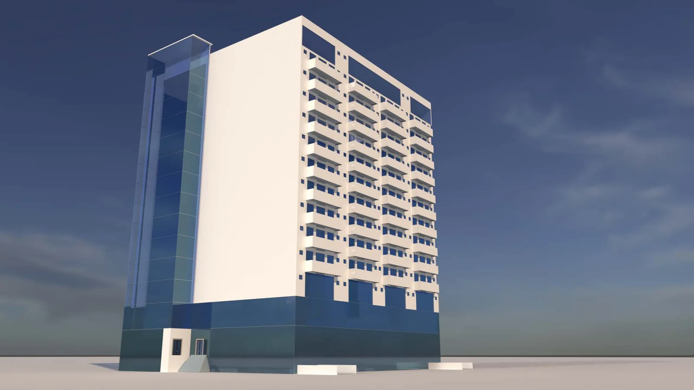
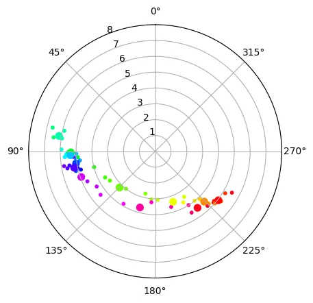
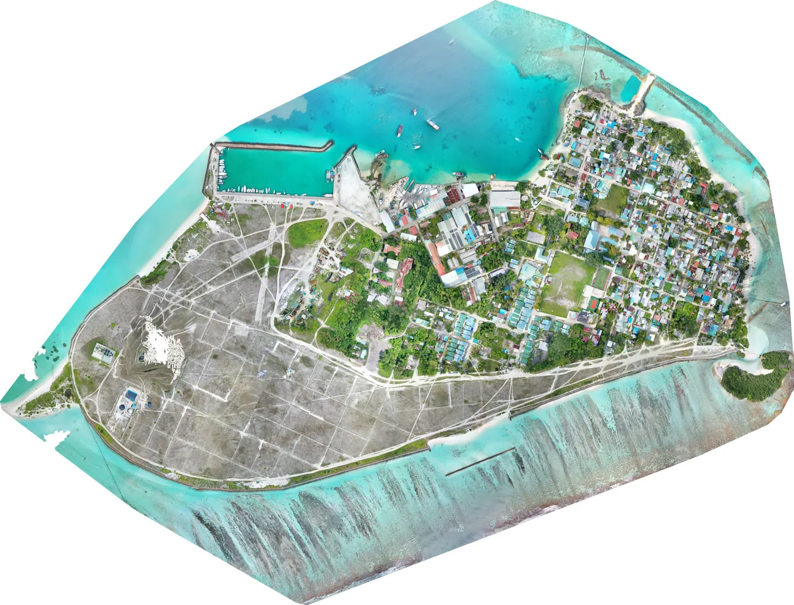

Started the Bachelor of Civil Engineering (Hons) at The Maldives National University
Four years of core coursework, leading up to the final-semester projects below.
Architectural Designer & Civil Engineer
Trained in both architectural design and civil engineering, taking concepts through to detailed 2D/3D models and drawings.
University work, in order: civil engineering first, then architecture.
2019 – 2026
A civil engineering degree first, then six architecture studio projects, from a single reading nook to social housing for Malé.
2019
Four years of core coursework, leading up to the final-semester projects below.
2023
A cozy and immersive space designed for literary escape and tranquility.
View projectStructural design, analysis and field work from the last semester of the degree, where it all came together into full projects.

Capstone · BES 401 Proposed 14-storey mixed-use building, Villimalé Site survey, structural design down to a raft foundation, drawing set, cost estimate and schedule.
Thesis Wind-load analysis of a 14-storey building Analytical vs STAAD.Pro, with 40 years of Hulhulé wind data processed in Python.
Coastal engineering Field study & breakwater design, K. Thulusdhoo Beach survey, drone mapping, soil sieve analysis and a layered breakwater.2024
2025
A vitalizing retreat designed as a strategic intervention within the concrete jungle.
View projectA homestay for an introverted host in N. Kendhikulhudhoo: guest quarters lifted to create a vertical threshold between host and guest.
View project2026
A floating settlement for the lagoon in 2050: dwellings that yield to water and tide, register the environment, and transmit it to the people inside.
To be known is to be loved. Social housing for Malé, eight to ten floors, built around one question: would your neighbours know your name?
In progressEngineering work in practice, mapped across the atolls.
Professional work
100+ engineering projects across the Maldives, counted by atoll.
Ongoing projects outside the coursework: illustration and code.
Illustrations · Wildlife Illustrated
My ultimate project: a hand-drawn record of every bird species recorded in the Maldives, each with its English, Dhivehi and scientific name. It has since grown beyond birds to the sharks and shells of the islands.
15 / 204 birds drawn
Code
I learned to code one small problem at a time: a messy manga folder, a spinning donut, and a grandmother who kept beating me at mancala.
2021 · Scratching an itch
My manga collection needed a folder for every volume and a comic archive for
every folder, and doing that by hand got old fast. I put together a batch
script from Stack Overflow answers, working out what each line did as I went.
It makes numbered volume folders, zips them with 7-Zip into .cbz
files and converts them back again. It is on version 4.0 now and I still use it.
This is when it really started. I saw the famous spinning ASCII donut and wanted to build my own, so I learned Python to do it. It grew into donuts, spheres and cubes with rotation, shading and depth. I saved over the original file so many times along the way that it's gone, so the one here is a rebuild that runs in the browser.
Right after the donut I went on a maths spree, and it was some of the most fun I've had coding. A sieve of Eratosthenes that counts the 455,052,511 primes below ten billion, written in Python and again in Julia. The Mandelbrot set. Digits of π from the BBP formula. A converter into non-integer bases, and a program that spells out any number in words, all the way up to the -illions.
Next I pointed Python at something I had years of data on: my MyAnimeList exports. I parsed the XML, built tables comparing my list with my friends', and played with ways to show how much I'd actually watched. Rerun on my latest export, it's a lot: 1,360 titles and 13,304 episodes, around 212 days of nonstop watching.
2022–2023 · Code for everything
A traffic analysis question (a doubly constrained gravity model) meant repeating a balancing step until the numbers settled, one Excel cell per iteration. I wrote it in Python instead, looping until it converged to an exact answer. Then the function took on a second life: whenever a new AI model came out, I asked it to make my code faster. Sixteen versions later, three were faster but wrong, one was slower than my original, and the latest, written by Claude Fable, runs 16 times faster than mine. I don't think it can be beaten.
I had forty years of daily wind data, 1980 to 2019. The first challenge was cleaning it up, and then cleaning it up again with as little, and as elegant, code as I could. Next was a wind rose, which somehow was a real challenge at the time. Once I'd cracked it I went on a spree: a rose for every year, animated, to see whether the pattern was shifting, and an arrow that circles the plot through the year, pointing the way the wind blows, so the monsoon switching over shows up at a glance. The same data later went into the wind-load analysis for my final-year thesis.
I played ohvalhugondi, the Maldivian mancala, with my grandmother again, and she won again. I decided to use code to build a bot that could beat her. At the time I only got as far as the game itself: a command-line version with the real rules, seven pits a side, seven seeds in each, and relay sowing. The bot would have to wait.
–
Probably the project I've spent the most time on. It's a Discord bot that takes a queue of manga pages and fan art, sorts each one by title into a forum thread and logs every post, so a whole collection lives in one server. It turned out far bigger than I expected, and it's where I learned how bots talk to online services, concurrency, and how to design a command system. I have rewritten it a dozen times since, from r0 in 2023 to v12 in 2026.
I got hooked on Coup, the bluffing card game, and wrote it as a command-line game in Python, through several rewrites. I never got it online, but we kept playing with real cards, so I built an Elo rating system for multiplayer games to rank every game we played, scoring each finishing order as a set of head-to-head results.
It started out of sheer boredom, and in my final engineering semester I did the coastal engineering assignments in Python: longshore sediment transport and how long a groyne takes to fill; beach profiles after three storms, where I spent far too long getting the integration and end conditions right to measure the sand eroded and deposited, and just as long making the plots look their best (this was before LLMs); and a rubble-mound breakwater, worked from run-up and overtopping through to armour stone weights, underlayers and the toe.
2024 · Problems I couldn't let go
I read light novels in English and wanted to know when the translations would catch up with Japan. I scraped the volume lists from Wikipedia and fitted a linear regression to predict the missing English dates. Rerun on today's data for Re:Zero, the fit is almost perfect, and the answer is never: English volumes come out about every 4.2 months and Japanese ones about every 3.3, so the gap keeps growing. Volume 46, out in Japan this month, should reach English around the end of 2031.
A Numberphile video showed a chess knight on a board numbered in a spiral, always jumping to the lowest-numbered square it hasn't visited yet. After 2,015 moves it's stuck on square 2,084. I wanted to see that spiral for myself, so I recreated it, first in Python and then in Go.
My grandmother passed away before I managed it. Twenty months after that game, I came back to it. This time I worked out depth-first search myself, without AI help, and wrote a bot that looks ahead through the possible moves and picks the best one. I built it in Google Colab and shared it with a few people, then later made a playable web version with AI's help, plus a Go API and a Go program to measure how big the game really is. It's the one I'm proudest of: the first time I set out to solve a problem that was genuinely hard for me, and did.
At the office, natural ventilation was checked in Excel: each room's openings have to add up to at least 10% of its floor area. The openings were listed in one cell, and I had to type how many of each into separate cells for a SUMPRODUCT to total the open area and say OK. I built an HTML and JavaScript version instead. The opening types and their areas are set up once, then each room is just a name, a floor area and its openings typed as one line of text. It parses the line, works out the percentage, and exports it all to Excel.
2025–2026 · Building for real
The illustration project needed a home, so I built one. It started as a simple page and in May 2025 I rewrote it from scratch in Vue. It's now a species browser for birds, sharks and shells, with English, Dhivehi and scientific names, grouped by family, with drawing progress.
I got interested in machine learning and spent a few weeks working through an O'Reilly book for beginners, trying the basic models one by one on Kaggle's Titanic dataset: logistic regression, k-nearest neighbours, SVMs, random forests, gradient boosting and a small neural network in PyTorch. Rerun today on the same held-out passengers, the simplest of them, logistic regression, still comes out on top. The animation first shows how each model splits passengers on just two features, age and fare, then the real scores.
I got curious about how radar actually works, so I built a simulation with AI as a tutor: a sweeping scope, echo timing for range, and the Doppler shift that gives away how fast a target is moving towards or away from you. Building it piece by piece was the best way I found to understand the physics.
Setting up drawing layouts in AutoCAD by hand took about 45 minutes a time. I wrote a script that sets them up automatically, and the same job now takes about 10.
The site you're reading. It's hand-built static HTML with a small Deno build step for shared partials, link and asset checks in CI, and live data from Tumblr and the illustration collection.
Toolkit
Background
Jan 2024 – Present
Engineer
Novea Engineering
Aug 2022 – 2023
Assistant Engineer
Novea Engineering
2023
Bachelor of Arts in Architectural Design
Maldives National University
2019 – 2023
Bachelor of Civil Engineering (Honours)
Maldives National University
Curriculum Vitae
The full picture in one PDF.
Contact
Have a project in mind or want to talk? Send a message, or email me directly.
Follow the studio work as it happens on my process journal on Tumblr ↗